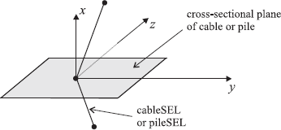
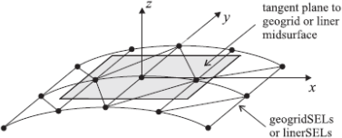

structure node create 命令
语法
- structure node create v <group s1 <slot s2 >>
在位置 v 处创建结构节点。单独创建的节点可用于以 by-nodeids 命令形式（例如 按节点 ID 创建梁单元命令（
structure beam create by-nodeids））创建单元。使用其他命令形式时（例如 by-line 或 by-ray），创建单元时无需单独创建节点——它们随单元创建自动生成。每个节点关联两个坐标系：全局系与局部系。
- 全局系可用于指定广义速度与位移边界条件、节点位置以及施加荷载。全局系在整个模拟过程中不变。
- 局部系用于指定控制节点与网格相互作用的附着条件。局部系也可用于指定速度边界条件。此外运动方程在这些局部方向上求解，因此只能在这些方向上固定或释放速度。另请注意，具有刚性附着条件的节点的任何自由度（例如锚索所用节点的节点局部 \(y\) 与 \(z\) 轴，它们刚性附着于锚索所嵌入的网格单元）不能被固定或释放，因为这些自由度的速度来自其附着实体。
局部系的方位在一组循环开始时（或执行 执行计算时步（
model cycle） 0 命令时）依据使用该节点的单元类型自动设定。对梁与壳，局部系与全局系对齐。对锚索与桩，局部系满足：1) \(x\) 轴与使用该节点的所有单元的平均轴向方向对齐；2) \(yz\) 轴在锚索或桩横截面平面内任意取向（见下图第一幅）。对土工格栅与衬砌，局部系满足：1) \(z\) 轴与使用该节点的所有单元的平均法向对齐；2) \(xy\) 轴在土工格栅或衬砌切平面内任意取向（见下图第二幅）。
图 1：锚索或桩所用节点的节点局部系方位

图 2：土工格栅或衬砌所用节点的节点局部系方位
（若某节点被多种单元类型使用，则局部系方位将对应以下列表中的第一个单元类型：衬砌、土工格栅、桩、锚索、壳、梁。因此若某节点同时被土工格栅与锚索使用，则局部系方位将对应土工格栅。）在大应变模式下运行时，局部系方位依据使用该节点的单元运动自动更新（除非该行为被 固定结构节点局部坐标系命令（
structure node fix system-local） 关键字抑制）。可用可选关键字 group 为所创建节点赋予组名。关键字 slot 可用于指定该组所赋的槽位；若未指定，则该组被赋给槽位 默认（Default）。组逻辑的用法见 组（Groups）。
| 这些内容对您有帮助吗？… | FLAC3D © 2019, Itasca | 原文更新于 2020 年 10 月 8 日 |